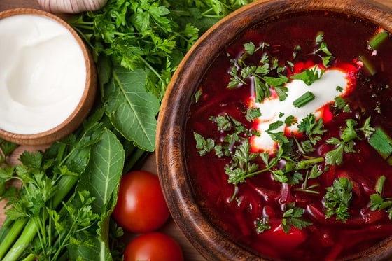

Класичний борщ
Час підготовки: 30 хвилин
Час приготування: 1 година
Кількість порцій: 6
Інгредієнти
- 300 г свинини
- 2-3 буряки
- 2 картоплини
- 1 морквина
- 1 цибулина
- 150 г капусти
- 3 столові ложки томатної пасти
- 1-2 зубчики часнику
- Сіль, перець, лавровий лист за смаком
- Сметана та зелень для подачі
Інструкції
- Промийте свинину, залийте водою і варіть до готовності, знімаючи піну.
- Очищені буряки натріть на тертці й тушкуйте з томатною пастою до м'якості.
- Додайте в бульйон порізану картоплю, потім натерту моркву та порізану цибулю.
- Додайте тушковані буряки та нашатковану капусту. Варіть до готовності всіх овочів.
- В кінці додайте часник, лавровий лист, сіль та перець. Варіть ще 5 хвилин.
- Подавайте гарячим зі сметаною та свіжою зеленню.